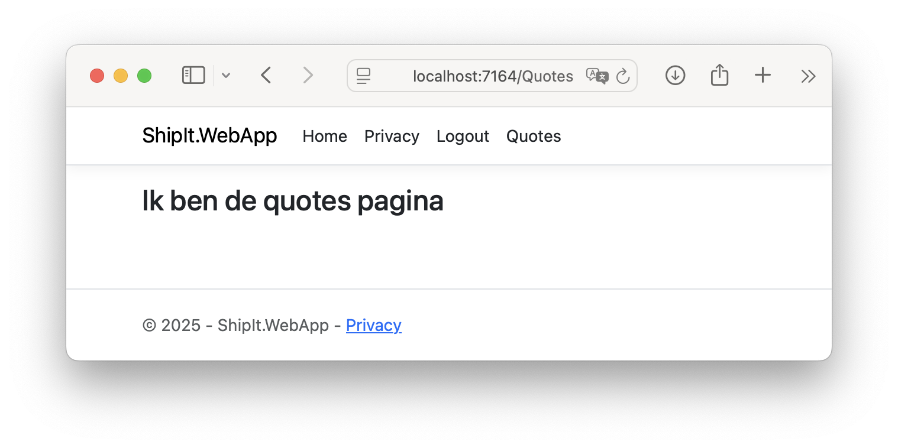
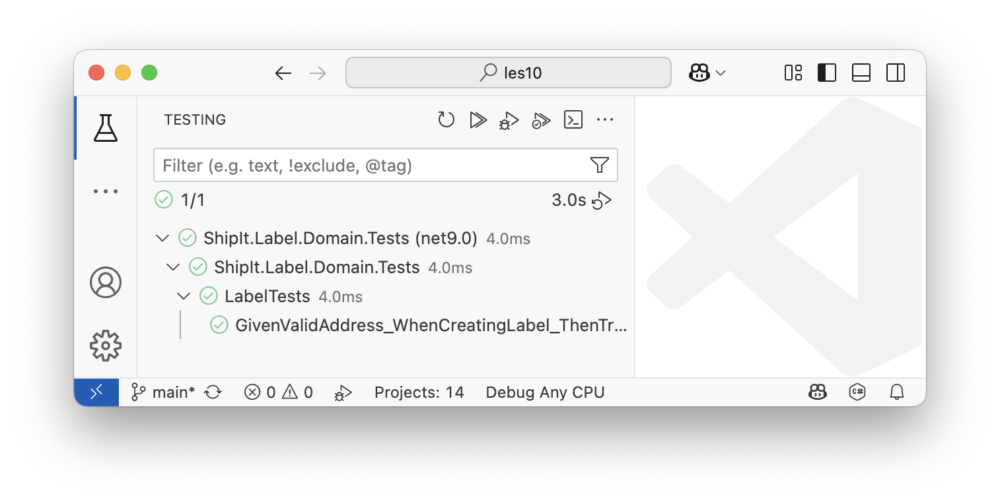
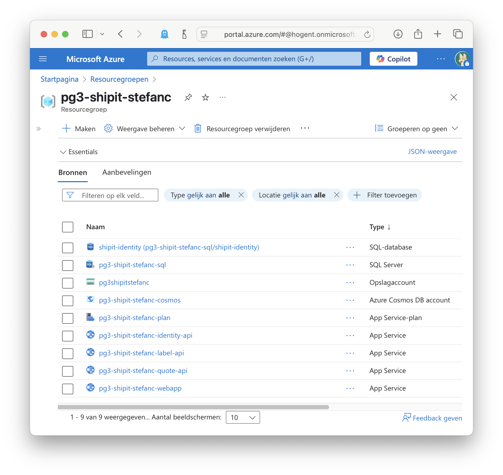

Totaalplaatje Afronden
| Deze sectie is nog niet volledig uitgeschreven, maar bevat alle notities om de implementatie te doen. |
| Denk eraan tijdens het testen tijdig een nieuw token te vragen. Database-driven configuratie changes zullen bijvoorbeeld geen impact hebben op reeds bestaande tokens. |
Cookie Wissen @ Logout
De logout lijkt te werken, maar toch blijft de user ingelogd. Je zal zien dat de relevante Cookies niet gewist worden. We moeten dit oplossen.
public class Index : PageModel
{
//...
private readonly SignInManager<ShipItUser> _signInManager; (1)
//...
public Index(
IIdentityServerInteractionService interaction,
IEventService events,
SignInManager<ShipItUser> signInManager (2)
) {
_interaction = interaction;
_events = events;
_signInManager = signInManager; (3)
}
//...
public async Task<IActionResult> OnPost()
{
if (User.Identity?.IsAuthenticated == true)
{
//...
// delete local authentication cookie
await _signInManager.SignOutAsync(); (4)
//...
}
return RedirectToPage("/Account/Logout/LoggedOut",
new { logoutId = LogoutId });
}
}| 1 | We hebben de SingInManager nodig die gekoppeld is aan AspNetIdentity. We deden dit vorige keer voor de Login flow, maar hier natuurlijk ook nodig. |
| 2 | Brengen deze binnen in constructor (via DI). |
| 3 | Assignen de referentie. |
| 4 | Gebruiken (in plaats van default HttpContext). |
Quote Maken Via Web App
Referenties
Referentie van web app project naar quote contracts.
Bij het maken van een Quote via web app, zullen we requestcontract gebruiken. Bij het lezen van een Quote, response contract.
Referentie naar nuget duende.identitymodel
Pagina
Maak nieuwe razor page "Quotes". Voeg pagina toe aan menu zoals vorige keer.
@page
@model ShipIt.WebApp.Pages.QuotesModel
@{
<h2>@Model.DemoProp</h2>
}
using Microsoft.AspNetCore.Mvc;
using Microsoft.AspNetCore.Mvc.RazorPages;
namespace ShipIt.WebApp.Pages
{
public class QuotesModel : PageModel
{
public string DemoProp { get; set; }
public void OnGet()
{
DemoProp = "Ik ben de quotes pagina";
}
}
}

ViewModel
public record PriceQuoteViewmodel
{
public string Id { get; set; }
public decimal WidthCm { get; set; }
public decimal HeightCm { get; set; }
public decimal DepthCm { get; set; }
public decimal WeightKg { get; set; }
public string CountryFrom { get; set; }
public string CountryTo { get; set; }
public decimal Price { get; set; }
public DateTime ValidUntil { get; set; }
}"QuoteApiHost" : "https://localhost:7146"
GET
@page
@model ShipIt.WebApp.Pages.ReadQuoteModel
@{
<form method="POST" asp-page-handler="Search">
<legend>Read Quote</legend>
<p>
<label for="txtQuoteId" class="form-label">Quote Id:</label>
<input asp-for="PriceQuoteViewmodel.Id" type="text" class="form-control" id="txtQuoteId" />
</p>
<button type="submit" class="btn btn-primary">Opzoeken</button>
</form>
<p>
<label for="p" class="form-label">Price:</label>
<input asp-for="PriceQuoteViewmodel.Price" type="text" class="form-control" id="p" />
</p>
<p>
<label for="f" class="form-label">From:</label>
<input asp-for="PriceQuoteViewmodel.CountryFrom" type="text" class="form-control" id="f" />
</p>
<p>
<label for="t" class="form-label">To:</label>
<input asp-for="PriceQuoteViewmodel.CountryTo" type="text" class="form-control" id="t" />
</p>
} public class ReadQuoteModel : PageModel
{
[BindProperty]
public PriceQuoteViewmodel PriceQuoteViewmodel { get; set; }
public void OnPostSearch()
{
// token uit de session halen
var token = HttpContext.GetTokenAsync("access_token").Result;
// token meegeven
var client = new HttpClient();
client.SetBearerToken(token);
// call naar quote api (GET /{quoteId})
var quoteId = PriceQuoteViewmodel.Id;
// TODO lees dit uit appsettings
var response = client.GetAsync($"https://localhost:7146/api/pricequotes/{quoteId}").Result;
// response evalueren
if(!response.IsSuccessStatusCode)
{
// error afhandelen
throw new Exception($"Error retrieving quote: {response.StatusCode}");
}
// response deserialiseren
var options = new JsonSerializerOptions();
options.PropertyNameCaseInsensitive = true;
options.Converters.Add(new JsonStringEnumConverter());
var content = response.Content.ReadFromJsonAsync<PriceQuoteResponseContract>(options).Result;
// resultaat mappen
PriceQuoteViewmodel = new PriceQuoteViewmodel
{
Id = content.Id,
WidthCm = content.WidthCm,
HeightCm = content.HeightCm,
DepthCm = content.DepthCm,
WeightKg = content.WeightKg,
CountryFrom = content.CountryFrom.ToString(),
CountryTo = content.CountryTo.ToString(),
Price = content.Price,
ValidUntil = content.ValidUntil
};
}
}
}Auth
Dit zal niet werken zolang de webapp client de rechten niet heeft om een read op de quote api te doen. Dit staat los van user roles!
-- read rechten aan app geven (los van users)
insert into pg3isles.ClientScopes (ClientId, Scope)
values (
(select Id from pg3isles.Clients where ClientId = 'webapp-client'),
'shipit.pricequote.api.read'
)
go//...
options.Scope.Clear();
options.Scope.Add("openid");
options.Scope.Add("profile");
options.Scope.Add("shipit.pricequote.api.read");
//...User Roles
Overzicht
-
Web App authenticated check ✅
-
Web App authorized check ✅
-
User authenticated check ✅
-
User authorized check ❌
Database
insert into pg3usersles.AspNetRoles (Id, Name, NormalizedName)
values
(NEWID(), 'QuoteAdmin', 'QUOTEADMIN'),
(NEWID(), 'User', 'USER')
goinsert into pg3usersles.AspNetUserRoles (UserId, RoleId)
-- bob wordt admin
values (
(select id from pg3usersles.AspNetUsers where UserName = 'bob'),
(select id from pg3usersles.AspNetRoles where NormalizedName = 'QUOTEADMIN')
),
-- alice wordt user
(
(select id from pg3usersles.AspNetUsers where UserName = 'alice'),
(select id from pg3usersles.AspNetRoles where NormalizedName = 'USER')
)
go
Via Identity Server WebUI auth cookie uitlezen (cleane tab). Rol zal zichtbaar zijn als role claim (dankzij Asp.Net Identity) .
|
Shipit.PriceQuote.Api
Auth scenario: GET /quote toegestaan voor
-
systeem met claim
shipit.pricequote.api.read, zoals voorheen. -
persoon met
QuoteAdminrol via systeem metshipit.pricequote.api.readclaim.
Voeg nuget duende.identitymodel toe.
//...
.AddJwtBearer(options =>
{
//...
options.MapInboundClaims = false; (1)
});
//...
| 1 | Geen automapping van claims op properties met andere namen. We willen alles volledig transparant en duidelijk opvolgen. |
builder.Services.AddAuthorizationBuilder()
.AddPolicy("QuoteReadPolicy", policy =>
policy.Requirements.Add(
new ClaimOrRoleRequirement( (1)
"shipit.pricequote.api.read",
"QuoteAdmin")));| 1 | We verwijzen naar een nieuwe IAuthorizationRequirement implementatie. Deze is generiek, dus we moeten de scope en expliciet rol meegeven. |
public class ClaimOrRoleRequirement : IAuthorizationRequirement
{
public string ClaimType { get; }
public string Role { get; }
public ClaimOrRoleRequirement(string claimType, string role)
{
ClaimType = claimType;
Role = role;
}
}De auth redenering / logica voor de QuoteReadPolicy wordt sterk aangepast.
public class ShipItAuthHandler : AuthorizationHandler<ClaimOrRoleRequirement>
{
private readonly IHttpContextAccessor _httpContextAccessor;
public ShipItAuthHandler(IHttpContextAccessor httpContextAccessor)
{
_httpContextAccessor = httpContextAccessor;
}
protected override Task HandleRequirementAsync(
AuthorizationHandlerContext context,
ClaimOrRoleRequirement requirement)
{
var claims = context.User.Claims.ToList();
// Als de app client de juiste _apiscope_ niet heeft...
if (!claims.Exists(c => c.Value == requirement.ClaimType))
{
// ...is het NOT OK.
context.Fail();
}
// Als de app client de juiste scope wel heeft...
else
{
var userId = claims.FirstOrDefault(c => c.Type == "sub")?.Value;
// ...en de call gebeurt door een _persoon_...
if (userId is not null)
{
// ... dan vragen we meer info aan identity server...
var client = new HttpClient();
var disco = client
.GetDiscoveryDocumentAsync("https://localhost:5001").Result;
var token = _httpContextAccessor
.HttpContext.GetTokenAsync("access_token").Result;
var request = new UserInfoRequest
{
Address = disco.UserInfoEndpoint,
Token = token,
};
var userInfo = client.GetUserInfoAsync(request).Result;
// ... en de persoon heeft de juiste _rol_...
if (userInfo.Claims.ToList()
.Exists(c => c.Type == "role" && c.Value == requirement.Role))
{
// ...dan is het OK.
context.Succeed(requirement);
}
// ... en de persoon heeft de juiste _rol_ niet
else
{
// ...dan is het NOT OK.
context.Fail();
}
}
// ...en de call gebeurt door een _systeem_...
else
{
// ...dan is het OK.
context.Succeed(requirement);
}
}
return Task.CompletedTask;
}var builder = WebApplication.CreateBuilder(args);
builder.Services.AddHttpContextAccessor();
builder.Services.AddSingleton<IAuthorizationHandler, ShipItAuthHandler>();
//...| Je kan de user/sub en/of extra userinfo gebruiken in de backend gebruiken. Je kan bijvoorbeeld bewaren welke data van wie is, of door wie aangepast werd etc. |
Idenity Server
We voegen de nodige configuratie toe zodat de role claim van een user door app clients opgevraagd kan worden. Dit zal lopen via de openid scope.
insert into pg3isles.IdentityResourceClaims (IdentityResourceId, Type)
values (
(select Id from pg3isles.IdentityResources where Name = 'openid'),
'role'
)
goTest in Pipeline
Add xunit test project ShipIt.Label.Domain.Tests to solution.
Maak project reference naar ShipIt.Label.Domain.
We willen de Address klasse testen, maar deze is internal. Dat is goed, maar we willen de klasse wel kunnen testen. We registreren een uitzondering.
using System.Runtime.CompilerServices;
[assembly:InternalsVisibleTo("ShipIt.Label.Domain.Tests")]We maken een test
-
Given-When-Then
-
Arrange-Act-Assert
namespace ShipIt.Label.Domain.Tests;
public class LabelTests
{
[Fact]
public void GivenValidAddress_WhenCreatingLabel_ThenTrackingNumberExists()
{
// Arrange
var address = new Address{
Name = "John Doe",
AddressLine1 = "123 Main St",
AddressLine2 = "Apt 4B",
Country = "USA"
};
var price = 19.99;
var label = new Label(address, price);
// Act
var result = label.TrackingNumber;
// Assert
Assert.NotNull(result);
}
}dotnet build
stefancourteaux@MBP % dotnet test ... [xUnit.net 00:00:00.19] Discovering: ShipIt.Label.Domain.Tests [xUnit.net 00:00:00.25] Discovered: ShipIt.Label.Domain.Tests [xUnit.net 00:00:00.25] Starting: ShipIt.Label.Domain.Tests [xUnit.net 00:00:00.43] Finished: ShipIt.Label.Domain.Tests ShipIt.Label.Domain.Tests test succeeded (1.7s) Test summary: total: 1, failed: 0, succeeded: 1, skipped: 0, duration: 1.7s
Of in VS Code

...
- task: DotNetCoreCLI@2
displayName: Test ShipIt Projects
inputs:
command: test
projects: '**/*Tests/*.csproj'
arguments: '--configuration $(BuildConfiguration)'| zie hoofdstuk "Pipelines" voor meer info en beelden. |
Deploy
az webapp up \ --name pg3-shipit-stefanc-webapp \ --plan pg3-shipit-stefanc-plan \ --resource-group pg3-shipit-stefanc \ --location westeurope \ --os-type Linux
az webapp up \ --name pg3-shipit-stefanc-identity-api \ --plan pg3-shipit-stefanc-plan \ --resource-group pg3-shipit-stefanc \ --location westeurope \ --os-type Linux
az webapp up \ --name pg3-shipit-stefanc-quote-api \ --plan pg3-shipit-stefanc-plan \ --resource-group pg3-shipit-stefanc \ --location westeurope \ --os-type Linux
az webapp up \ --name pg3-shipit-stefanc-label-api \ --plan pg3-shipit-stefanc-plan \ --resource-group pg3-shipit-stefanc \ --location westeurope \ --os-type Linux
